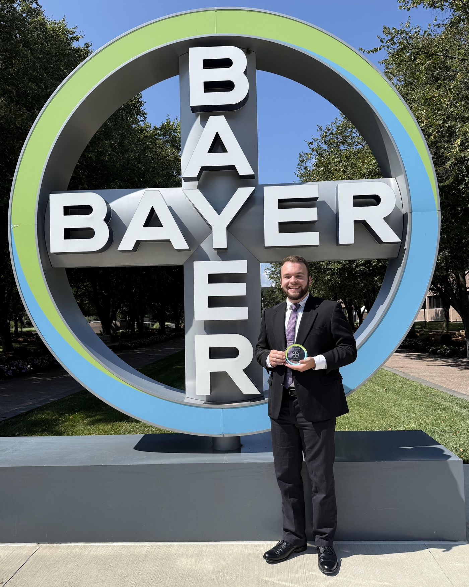
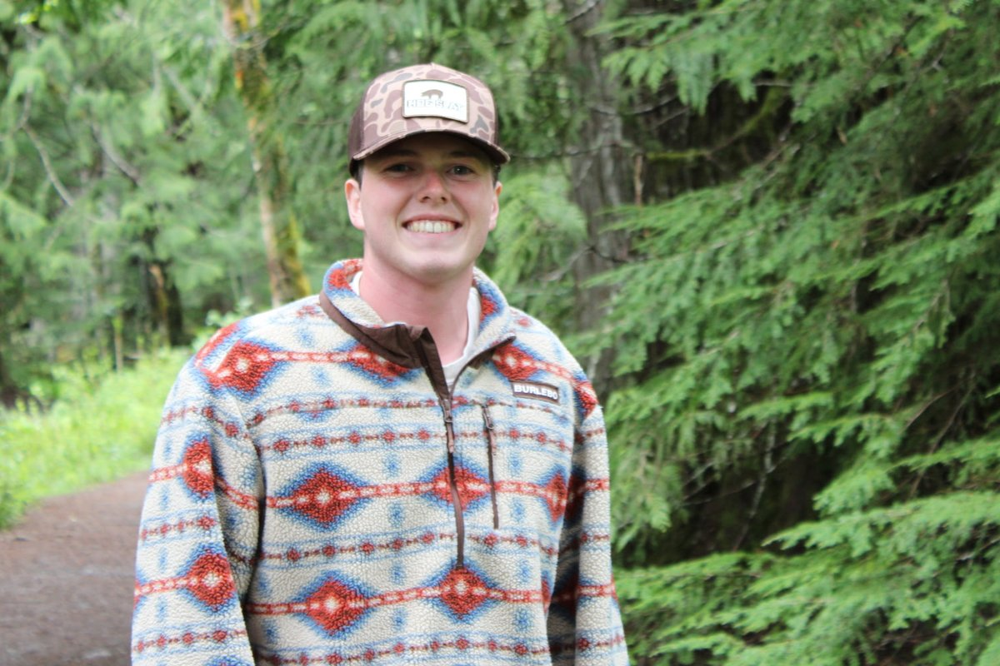

NC State Agricultural Business Management
The ABM Drop
Issue 4 · Tuesday, November 17, 2026Tyler Pinkowski transferred into ABM, took a sales workshop, and spent last summer selling for Bayer Crop Science in Florida. This fall, Bayer offered him a full-time job. He starts in May.
Tyler Pinkowski · ABM senior
Read Tyler’s story →
Photo courtesy of Tyler PinkowskiTyler Pinkowski transferred into ABM, took a sales workshop, and spent last summer selling for Bayer Crop Science in Florida. This fall, Bayer offered him a full-time job. He starts in May.
Tyler Pinkowski · ABM senior
Read Tyler’s story →The Helms/OSM Policy Scholarship places you in a congressional office with a $5,000 stipend. Application, three short essays, and two letters.
Apply →Alternative Service Break opens applications Thursday for May 2027 trips on issues including agriculture and food insecurity. Travel awards help with the cost.
See trips →PACK ASSIST is one application for hundreds of NC State scholarships. The State of North Carolina Internship Program pays $15 an hour for 10 weeks in a state agency.
PACK ASSIST →
The four finalists outside the department office in Nelson Hall. From left: Caleb Ward, Alyson Sharp, Natalia Ruiz Pimentel, and Cooper Lanier. Photo by Matt Smith.
Nine ABM students sat for a 15-minute interview with a panel of three. Four advanced to a second interview with two people from BASF, a crop protection company.
“Do it. People want to help you succeed. You just have to give them a chance.”Seth Thompson, ABM freshman from Whiteville, N.C.
The college gives eight student awards each spring. ABM gets one nomination per award, so email Dr. Treme as soon as possible. Last spring, Matt Smith and Nithin Gudderra both won.
Email Dr. Treme →
ABM in actionFrom a practice interview to a summer internshipIn October, Tucker Batten did a practice interview with Terra Green Precision Landscapes at an event ABM organized. It turned into an 11-week paid internship in Concord.
Read Tucker’s story →